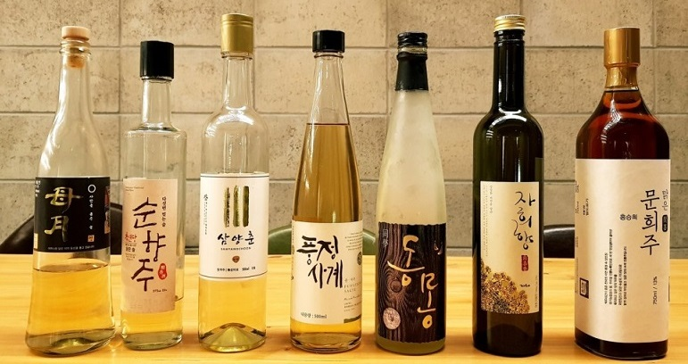

- 술술 소개
- 우리 술 종류


도수:13~18도
곡식 가루를 뭉쳐 곰팡이와 효모를 번식시킨 누룩으로 쌀을 당화 발효시켜 만든다.
맑은술(clear wine) 또는 징주(澄酒)라고도 한다. 쌀알갱이와 쌀가루가 섞여 있는 발효 직후의
원주를 정제하여 맑은 부분만 떠낸 것이며, 탁한 상태 그대로 마시는 것은 탁주(濁酒)라고 한다.
참고로, 탁주는 동동주를 의미한다. 약주로 불리기도 하는데 이는 조선시대 금주령이 내려지자
특권층들이 약제로 위장하여 마셨기 때문으로 추측된다. 한국의 청주와 일본의 청주(사케)는
유사하나 사용되는 누룩과 미생물, 제조법에 차이가 있다.
대표 상품: 술소리- 지리산 기운내린 강쇠,우희열 명인- 한산소곡주, 롯데- 백화수복,
롯데-청하, 롯데-설화, 초가- 한청 등